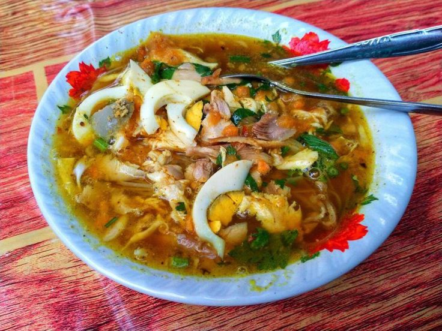
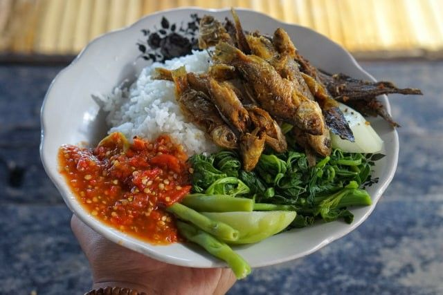
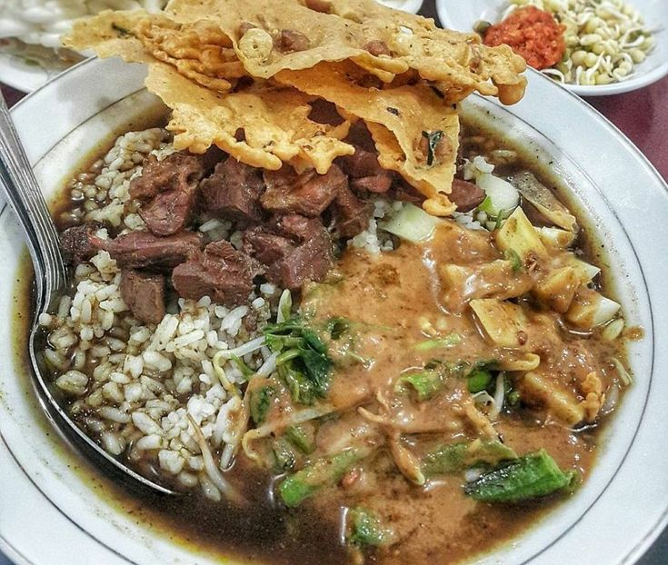
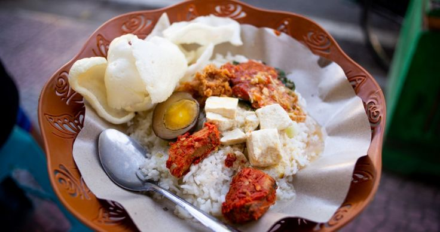
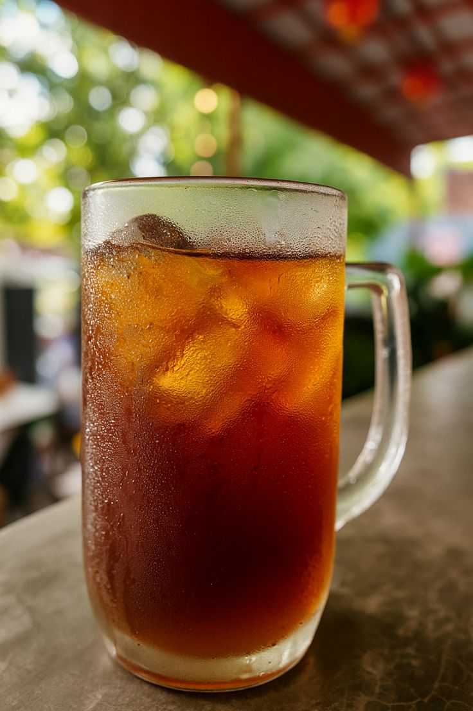

Galeri Foto Makanan & Minuman
Berikut adalah beberapa foto makanan dari Warung Makan Banyuwangi:

Rujak Soto Banyuwangi

Sego Tempong Banyuwangi

Rawon Pecel Banyuwangi

Sego Cawuk Banyuwangi
Berikut adalah beberapa foto minuman dari Warung Makan Banyuwangi:

Es Teh

Es Jeruk

Es Temulawak
Teh Hangat

Kopi Hangat